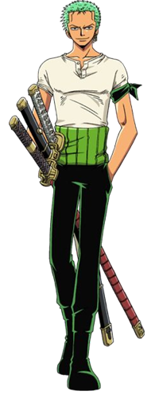
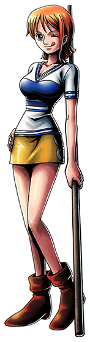
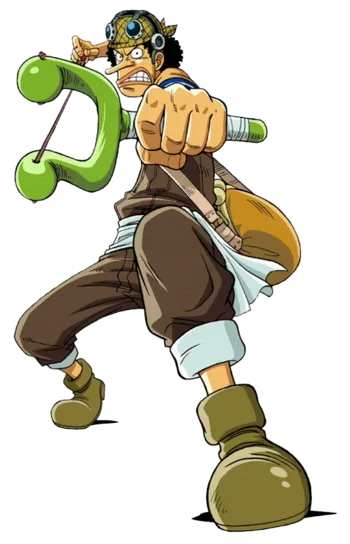
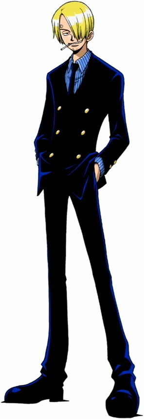
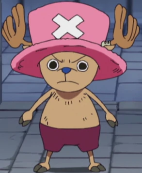
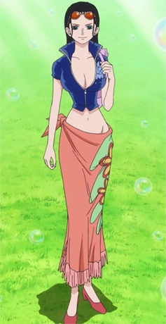
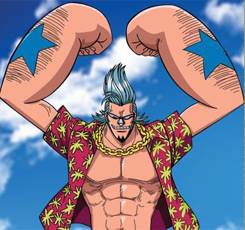
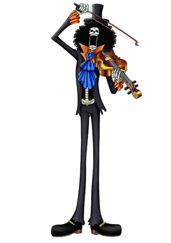
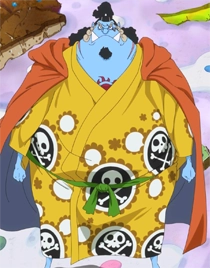

Monkey D Luffy
Captain of the Straw Hat Pirates

Captain of the Straw Hat Pirates
Luffy is a very simple person on the surface. He loves food, his friends, and having adventures. He tends to be very silly, only ever taking situations seriously when the well being of those he cares for is threatened. He is especially notable in the fact that he has no mental filter, and will say every thought as they enter his head. This can often get him in trouble, and also means that when he is quiet his head is literally empty. He's not traditionally very smart, lacking in some common sense and often making silly decisions. To contrast this however, he is incredibly emotionally intelligent. He can almost always tell when someone is lying to themself about how they feel, and instinctively knows whether or not someone is good natured, even if they act in an opposite manner.
As the captain of the Straw Hat Pirates, Luffy's main goal is to find the legendary treasure known as the one piece and become king of the pirates. He wants this because his true dream is to be the most free man in the world, and the pirate king answers to nobody. Another of his goals is to make all his friends as free as he wants to be, with plenty of tasty food and parties. He accomplishes this by punching anyone and everyone who is mean to his friends, no questions asked.
Luffy is the captain of his crew, and mostly serves as the strongest combatant and leader. He ate a magical devil fruit known as the Gum Gum fruit. This made it so he looses the ability to move underwater, dooming him to drown should he fall off his ship, but in return turned his body into rubber. with near infinite stretchability, Luffy's creative mind has created a large variety of special techniques, from stretching his arms and legs for ranged punches and kicks to blowing himself up like a balloon, or even using the elastic properties of his body to launch himself through the air. He is also incredibly strong, able to pick up and throw large blocks of stone. Luffy's greatest strength is actually his charisma however. Luffy's kindness knows almost no bounds, and on multiple occasions has overthrown entire governments simply because an oppressed citizen fed him a warm meal. People are naturally drawn to Luffy's charm and good-hearted nature, leading him to become an almost impossible force.
Luffy has a crew of ten pirates, all of them hand picked to help him on his journey. The straw hat pirates
include:

The first mate; Pirate Hunter Roronoa Zoro

The navigator; Cat Burglar Nami

The sniper; God Usopp

The chef; Black Leg Sanji

The doctor; Tony Tony Chopper

The archeologist; Demon Child Nico Robin

The shipwright; Iron Man Franky

The musician; Soul King Brook

The Helmsan; First Son of the Sea Jinbei